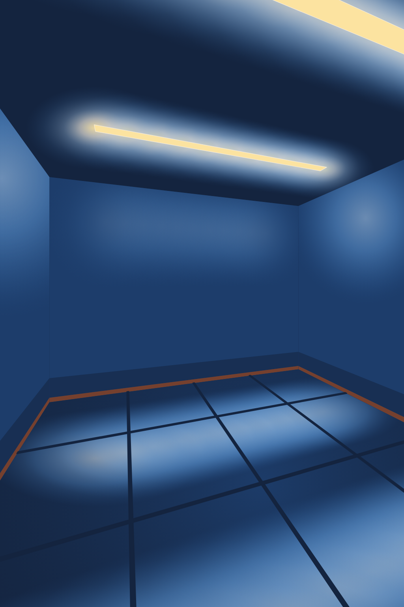
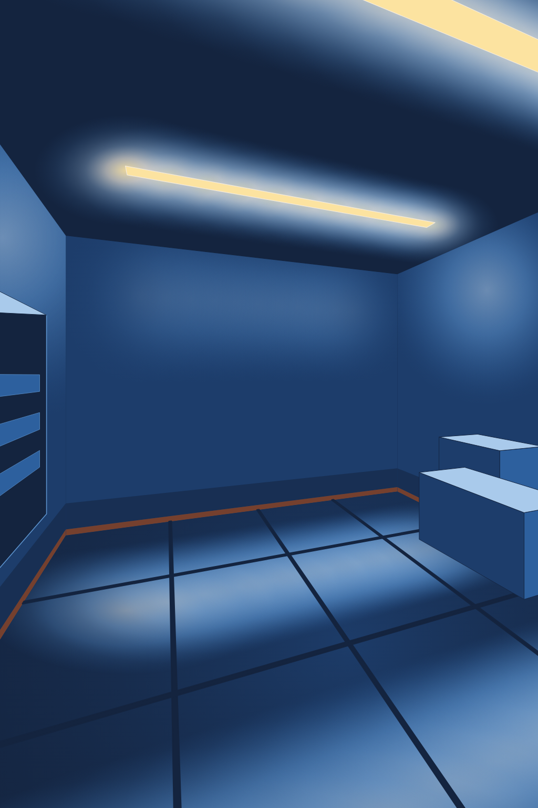
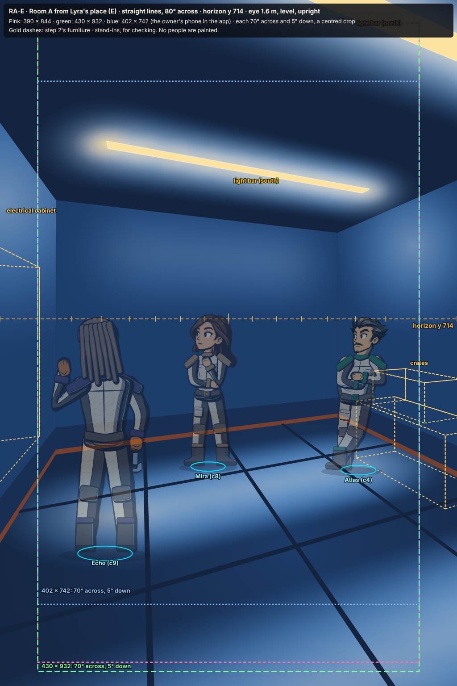
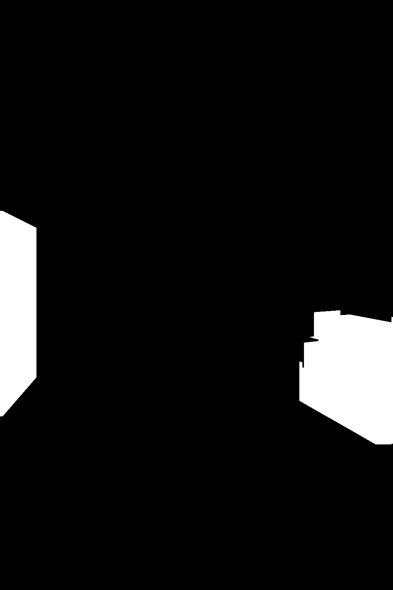
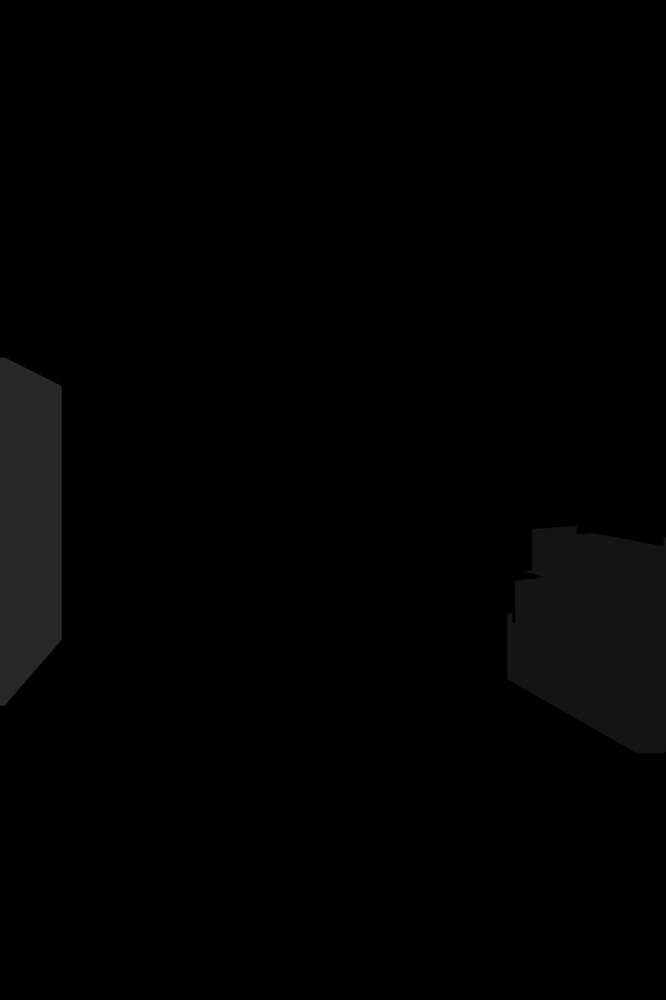

Sheet RA-E · Room A, view E
Version 3 · for the Lead’s review · RA-E-2c, before any liftRoom A’s fifth view, from Lyra’s place by the north wall, painted the way views A and B were: two pictures, the empty room and then its furniture, which here is Echo’s cabinet at the left edge and Atlas’s crates on the right. The food capsule and the round window are out of this view, so there is no third step. No people are painted, because code draws them. Every picture made from this sheet is AI-generated and recorded as such. The only inputs are the code-drawn guides and masks on this page, and the picture its own step 1 keeps.
compositeE2.py), its record (composite-E2.json) and 7 review pictures. Below.Version 2’s changes
- The selective 12 px growth (the Lead, 27 November, 18:38). Step 2’s mask grows 12 px more wherever no traced feature, small light, window or step-3 capsule lies within 15 px of the new edge, so a piece painted a little past its outline is not cut: 7,019 px added, 6.65% → 7.10% of the picture. The split map grows with it, each added pixel taking its piece’s grey. Larger overruns are completed in code from the raw, as RA-B-3c was. The overlay.
- The 15 px rule, against RA-E-1’s painted features. Passed: 6 features near the mask; 0 pass outright and 6 on 6 named exceptions, for the Lead’s decision, each where a piece stands in front of a feature. Below.
- The crates stand on the painted deck. Their floor corners are drawn on RA-E-1’s painted deck: +10.6 and +11.8 px at their far end, by the far corner, and +0.0 and −0.7 px at their near end. Only the crates’ area changes, in the mask and the guide: no warp. Below.
- Atlas’s foot line. +6.8 px off the painted deck: under the Lead’s 8 px, so it stays. Below.
- Echo’s cabinet stays inside the painted east-wall strip: the painted corner is 18.2 px left of the guide’s, and the cabinet’s area ends 12 px short of it in every row. Below.
- The prompts are version 1.1’s, byte for byte, as RA-E-1 was made with them; step 2’s PLACE block carries the Lead’s crate-top line, as it has since version 1: “The upper crate’s top face stays clear: nothing lies or stands on it, because code adds the parcel Atlas lifts.”.
- Files. New bytes:
img/ra-E-empty-annotated.png,img/ra-E-guide.png,img/ra-E-regions.png,img/ra-E-place.png,img/ra-E-split.png; the other 2 pictures are version 1.1’s, byte for byte. The manifest is new: step 1 done, step 2’s input pinned, the checks and the evidence files.
Version 1.1’s changes
- Added to the colour block (steps 1 and 2), after “no green, purple or red light.”: “Each indicator is a single small dot, never several in a row or a column.”
- Added to the view block (step 1), after “on the right, the west wall.”: “The south wall is seen at a slant, not square on: its foot and the deck seams along it run down from the far corner, right of the middle, to its corner with the east wall near the left edge, as the guide shows.”
- The guide. The deck seams in the guides are drawn at full strength with a 3 px stroke of the same deep navy (version 1: the seam alone, at 0.9 opacity). The plates are the same 1 m plates. The before and after are under the picture.
- Files. New bytes:
img/ra-E-empty.png,img/ra-E-empty-annotated.png,img/ra-E-guide.png; the other 4 pictures are version 1’s, byte for byte. The manifest and the prompts are new. Each prompt is version 1’s with only these sentences added (the build checks it): step 17d8dd27e31bf…→8ac063effbc6…, step 2f9a2071c8749…→fe60e96cfd00….
- Every piece whole. View A’s step 2 left the cabinet’s right side open, fading into the wall at the mask’s edge, and two masked fixes could not close it, so its frame was drawn in code. Step 2’s prompt here asks for each piece whole, its outline and frame closed on every side, and nothing fading into the wall or the deck at an area’s edge.
- The 15 px rule. View A’s step-1 picture painted wall features that step 2’s mask then had to clear. Here the accepted step-1 picture’s painted features are traced and step 2’s mask is checked against them (every edge covers a feature by 15 px or clears it by 15 px), in version 2: below.
- Openings. Neither the round window nor a monitor is in view E, so this view has no opening to hold flat black.
- The crate top. Atlas works at the crates in this view. In the Lead’s words, step 2’s prompt says: “The upper crate’s top face stays clear: nothing lies or stands on it, because code adds the parcel Atlas lifts.”
- Lyra’s own station. Left out, as the approved plan leaves each viewer’s own station out of their own view. Slivers of Lyra’s hatch, its lid and the toolbox would show at the foot of the 390 × 844 and 430 × 932 phones (up to 31 px from the stage’s foot), and nothing on yours, 402 × 742. They are measured below for the Lead’s decision.
Step 2 · RA-E-2, completed in code: RA-E-2c
RA-E-2 (sha256 eeadc937bf93f791…) is the image tool’s keep: RA-E-2’s raw edit over RA-E-1 inside step 2’s mask (version 2’s, with the selective growth), feathered by a 2 px Gaussian. Rebuilt here from those two pictures, it matches pixel for pixel. Where a piece ran past the mask, the keep cut it. Each cut piece’s outline was traced on the raw edit along the outer edge of its ink line, at the midpoint between the ink and what lies just outside it; where the wall beside the ink was as dark as the ink, or the wall’s pipe or kick strip met the scan line first, the reading was taken from the luminance at 8 times, on the far side of the ink. Each outline closes at least 8.0 px inside the mask, where RA-E-2 already equals the raw (checked within 1.5 px of every closing path: 0 pixels differ), or up the picture’s own left edge. Inside the outline RA-E-2c takes the raw’s pixels; the alpha falls from 1 to 0 over the 1 px outside it; nothing else comes from the raw.
The crates’ left ends (the Lead’s item 1). The raw paints both crates whole: the upper crate’s top-left bracket reaches x 800, 18 px past the mask, and the lower crate’s left end x 760, 20 px past it. The upper crate is completed from its top edge round its bracket and down its left side to where the mask holds it; the lower crate along its top face’s back edge, round its top-left bracket, down its left side and bottom-left bracket, and along its bottom edge into the mask. A notch in the mask’s left edge inside the upper crate (x 818–829, y 881–888, 72 px) and a slot in the mask inside the lower crate’s front (x 788–791, y 941–956, 64 px): two gaps the selective growth left inside the crates, where the keep let RA-E-1’s wall show faintly through them. They lie inside the outlines and are completed with them (160 px).
The cabinet’s right frame (the Lead’s item 2). The painted corner of the left-hand wall and the south wall is a 1 px line at x 107, from y 460 to 1000, in RA-E-1 and in the raw above the cabinet. The raw’s right post has its face at x 104–111 and its ink at x 112–113: its face reaches 4 px past the corner, the outer edge of its ink 6.9 px (x 113.9). At 3 times the post stands where the corner was, the corner line above and below the cabinet meeting its top and its foot: it reads as the cabinet standing in the corner, not as a face wrapping onto the south wall. So the raw’s frame is taken whole. If the Lead reads it as wrapping, the post would be closed at the corner in code instead, as view A’s cabinet frame was drawn. The same cut ran on along the frame’s bottom bar (its lower edge and ink lay 5 to 6 px past the mask’s diagonal edge, down to the picture’s left edge) and along its top bar’s top ink (0 to 2.5 px past the mask, so the keep’s feather had faded it). So the cabinet’s piece follows the frame’s outer ink all round and closes up the picture’s left edge: the frame is closed on every side. Its changed pixels: the right post and its two corners 7,374, the bottom bar’s lower edge 1,480, the top bar’s top edge 587, and 1,395 more along the frame inside the mask, where the keep’s feather had blended it.
Left as they are: the contact shadows under the crates (shadows, not pieces, as the Lead asked for B); the wall’s pipe behind the crates’ left ends, left of the mask (RA-E-1’s wall, outside the crates’ outlines; the raw’s pipe meets it at the keep’s own seam, inside the mask); the bracket above the cabinet’s top bar, x 15-40, y 543-556 (RA-E-1’s own wall fixture, outside the frame’s outline; the raw paints one much like it).
| Piece | Changed px | Outside the mask | Inside it (the keep’s blend) | Where it closes | Where |
|---|---|---|---|---|---|
| The upper crate’s left end the Lead’s item 1 | 1,413 | 985 | 428 | 8.0 px inside the mask | x 799–834, y 834–895 |
| The lower crate’s left end the Lead’s item 1 | 3,205 | 2,514 | 691 | 8.5 px inside the mask | x 759–796, y 917–1037 |
| The cabinet’s frame, all round the Lead’s item 2 | 10,836 | 8,155 | 2,681 | up the picture’s left edge | x 0–114, y 549–1084 |
The pictures below show RA-E-2 and RA-E-2c, both AI-generated (RA-E-2c a code composite of AI-generated pictures); each is labelled in itself and in its caption, and none is an input, an asset or a commit. On the cabinet’s, the painted corner is marked with yellow dashes.


The whole picture, the 402 × 742 view and the check
The 402 × 742 phone’s slice runs from x 85 to 939: the crates’ left ends are in it, and of the cabinet only its right post, at the slice’s left edge.


python3 -I compositeE2.py <records folder> # reads img/RA-E-2.png, img/RA-E-2-raw.png and img/RA-E-1.png there, each by its sha256 # writes ra-E-2c.png (the plate) and composite-E2.json, and stops if a check fails
| File | Bytes | sha256 |
|---|---|---|
compositeE2.pythe composite in code: the traced outlines, the 1 px feather and the checks | 22,576 | aeda70b1f570fcad370ed038a660aea83d2b01b6f3d383c364473ec9e7577e9b |
composite-E2.jsonits record: the sources and their sha256, the outlines, the frame at the corner, each piece’s changed pixels, the checks and the plate’s pixel sha256 | 16,872 | 1b217ad68dd565e6a57a4cdadb054f371f023baeaf877f6ff306b52d24ca4237 |
The plate, ra-E-2c.png, is not published here, being an AI-generated picture without a label of its own: the command above makes it from the image session’s records. Its pixels’ sha256 is af6f06d705f3a275b4e232eb7fdd7067d6fda25f4e93ecb8b9fa30c752e36d74.
The picture
As views A’s and B’s: 1024 × 1536, straight lines, 80° across (focal 610.2 px), level, the horizon 714 px from the top. The camera is at Lyra’s place by the north wall, east of its middle, at eye height (1.6 m), facing 197.7°, a little west of south. The south wall is the back wall, with a strip of the east wall on the left and the west wall on the right. In view: Mira (open deck, seen from Mira's right, approved face); Echo (electrical panel, seen from Echo's left, approved face); Atlas (crates, seen from Atlas's left, approved face). Vega is out of view.



The guide’s deck seams, version 1 and 1.1
The same 744 × 440 px crop of step 1’s guide, at 1:1, where the south wall meets the deck: the far corner on the right, the wall’s foot running down to its corner with the east wall on the left. Version 1.1 changes the seams alone.


What each phone shows


Step 1 · done: RA-E-1
RA-E-1 (sha256 e0d928ef4c1dabd3…) was made on version 1.1 and accepted by the Lead on 27 November. It is an AI-generated picture; its record, with its tool, prompt, date and settings, is in the image session’s records. The pictures in this version that show it, with this sheet’s masks drawn over it, are for review only: each is labelled as AI-generated in itself and in its caption, and none is an input, an asset or a commit.

The crates on the painted deck
RA-E-1 paints the west wall’s foot lower than the guide does beside the crates: +18.9 at x 760, +16.6 at x 800, +14.3 at x 840, +12.0 at x 880, +9.7 at x 920, +7.5 at x 960, +5.2 at x 1000 px, read on the foot of its kick strip (49 readings, a straight line within 1.56 px). Its deck seam 1 m out from the west wall lies +12.0 at x 650, +9.0 at x 710, +6.0 at x 770, +3.0 at x 830, +0.0 at x 890, −3.0 at x 950 px from the guide’s. So each of the crates’ floor corners keeps its place between the wall’s foot and that seam, as the guide’s camera puts it, and is drawn at the same place between the painted ones, as view B’s desk was. The crates’ tops stay where the camera puts them: their far end grows down onto the painted deck and the near end stays. Nothing else in the guide moves.
| Crates’ floor corner | Guide y | Painted y | Down, px |
|---|---|---|---|
| front, 0.6 m out, far end, x 798 | 1014.6 | 1025.3 | +10.6 |
| front, 0.6 m out, near end, x 998 | 1139.4 | 1139.4 | +0.0 |
| back, at the west wall, near end (outside the picture), x 1103 | 1108.0 | 1107.4 | −0.7 |
| back, at the west wall, far end (behind the crates), x 884 | 998.6 | 1010.4 | +11.8 |

Atlas’s foot line
Atlas stands in front of the crates’ far end, 0.792 of the way from the west wall’s foot to the seam 1 m out. Kept at that place between the painted lines, Atlas’s anchor sits +6.8 px from the guide’s (about 3.1 px on the 390 phone). That is under the Lead’s 8 px, so Atlas’s foot line stays where the plan puts it.
Echo’s cabinet and the painted corner
RA-E-1 paints the corner of the east and south walls at x 107, 18.2 px left of the guide’s (x 125): read as the column darkest on average over the cabinet’s rows, then row by row within 3 px of it, every 10 px from y 600 to 980. Step 2’s mask for the cabinet ends at x 94, so it stays inside the painted east-wall strip, 12 px short of the corner in every row. The cabinet’s area is unchanged from version 1.1.

The 15 px rule on RA-E-1
Every edge of step 2’s mask either covers a painted feature with 15 px to spare or clears it by 15 px. RA-E-1’s features near the mask were traced at three or four times on a 10 px grid (featuresE.json), and the test is view A’s own code (feat15.py). 0 of the 6 pass outright. The other 6 pass on 6 named exceptions, each a zone where a piece stands in front of the feature, so its outline must cross it or run along it: these are for the Lead’s decision. The 2 indicator dots are at least 60 px from every mask.
| Feature | Against the mask | Px within 15 | Named exception |
|---|---|---|---|
| paper on the east wall | crosses | 1,694 | behind the cabinet’s top. Echo’s cabinet stands in front of the paper: the cabinet’s top edge crosses it, and its lower part lies inside the cabinet’s area. |
| pipes on the east wall | crosses | 4,146 | behind the cabinet, along its right side. Echo’s cabinet stands in front of the pipes: its top crosses them, and inside its area they run 9 px from its right edge. |
| wall box with its indicator light | inside by 4 px | 1,474 | inside the cabinet’s area, by its right side. Echo’s cabinet stands in front of the wall box: the box lies inside the cabinet’s area, 3 px from its right edge, and the cabinet covers its indicator dot, 14 px inside. |
| pipe along the foot of the east wall | crosses | 4,629 | behind the cabinet’s foot. The cabinet’s lower edge crosses the pipe that runs along the wall’s foot: the cabinet stands in front of it. |
| pipe along the west wall | crosses | 1,407 | behind the crates’ far end. Atlas’s crates stand in front of the pipe: their far end crosses its run along the west wall, and its bend round the corner comes within 15 px of their far end. |
| locker on the west wall | crosses | 3,610 | behind the upper crate’s top. Atlas’s crates stand in front of the locker: the upper crate’s top edge crosses it. |


The two steps
Step 1 is done: RA-E-1, accepted. Step 2 makes RA-E-2. The Lead gives each step’s go, naming this sheet’s version and hashes, and accepts each picture before the next step starts. All commands run from the sheet’s folder with NumPy and Pillow, and the tool stops if any file is not the sheet’s.
Step 1 · the empty room · done
RA-E-1, from the prompt below (version 1.1’s, unchanged in version 2), accepted by the Lead on 27 November.
- Input
img/ra-E-empty.png, with no mask and no second picture- Size
- 1024 × 1536, one picture
- Check
- The colour check with the empty room’s map, and the lines against the annotated guide: the horizon at 714, every vertical upright, the corners and floor seams where the guide puts them
Step 1: the prompt, 4,687 characters · sha256 8ac063effbc61092…
Create an illustrated science-fiction world with convincing three-dimensional depth and a hand-inked graphic-novel finish. Use strong silhouettes, expressive outlines, textured shadows and worn materials. Build environments from layered machinery, exposed pipes, suspended cables, overlapping panels and objects that suggest everyday use and repair. Organize dense detail around clear focal points. Use controlled colour palettes with warm luminous accents against cool shadow, giving each location its own atmosphere. The world should feel active, inhabited and larger than the visible frame, with layered depth, while the composition stays clear. Overall: lived-in, cyber, illustrated science fiction, lit and readable: warm lamplight against cool blue-steel shadow, dark only in the corners. This is a still picture and code adds the motion, so paint everything crisply: no motion blur, no lens blur, no film grain. Room A, the crew bay, in the same illustrated world: blue steel, lit warm. The whole room is one blue-steel family, the colours of the attached guide: deep navy in the shadows and corners (#14243F, #1D3D6B), steel blue on the walls and the deck (#2D609E), turning paler where the light falls (#5C92CC, #A9CAEB). The light is warm: the two light bars glow cream along their length (#FCE3A0), with a warm paper-white glow (#F4EBDD) on the ceiling around them and soft pools of pale light on the deck below. Walls, panels, pipes, cables and deck plates take their colour from that family; worn edges, rivets and plate seams show a little rust (#75402E); nothing is neutral grey, and nothing is tan, beige, olive, purple or violet. The shadows are deep navy, never black-brown or grey. Labels and paper are blank, in a warm paper white (#F4EBDD). Small indicator lights are warm orange (#EC793C); no other coloured light, and no green, purple or red light. Each indicator is a single small dot, never several in a row or a column. Practical and worn, a working bay, quiet but lived in. The guide is the room's colour plan: paint over it in full detail and texture, but keep its colours and where its light falls. The room: Room A, the crew bay, a 4 m square room with a 3 m ceiling, here with no furniture in it. The ceiling is solid steel panels, with no skylight and no opening in it: two long light bars set into it run across the room about 1.4 m apart, each glowing warm cream along its whole length behind a plain diffuser, lighting the ceiling around it and throwing soft pools of light on the deck below. The walls are steel panels, pipes, conduits, cable runs and small lockers, worn and repaired, darker toward the deck, with a narrow rust-brown kick strip along their foot; the deck is metal plates with seams, scuffs and a little rust, lit pale under the light bars and darker toward the corners. No beams, rays or shafts of light in the air. View: a straight-lined view at standing eye height, exactly as the attached guide shows: 80 degrees across and level, every vertical line perfectly straight and upright, every straight line in the room straight in the picture. The horizon, at eye level, is a straight line 714 px from the top, a little above the middle. Match the guide's layout, perspective, horizon and proportions exactly, line for line, as its floor seams, wall bases, corners and ceiling edges show. Do not curve the lines, tilt the view, zoom in or out, or move the horizon. This picture: from a place by the north wall, east of its middle, at standing eye height, looking across the room toward the south wall, turned a little to the right. Ahead, the south wall, from its corner with the east wall near the left edge to its corner with the west wall right of the middle; on the left, a narrow strip of the east wall; on the right, the west wall. The south wall is seen at a slant, not square on: its foot and the deck seams along it run down from the far corner, right of the middle, to its corner with the east wall near the left edge, as the guide shows. Above, the solid ceiling: the farther light bar runs across it from left to right, high in the picture and a little lower at its right end, and the nearer one crosses the top right corner. The deck is open and clear, with nothing standing on it, while the walls keep their pipes, panels and conduits. No people, and no words, letters or logos. Leave screens plain for the game to fill: openings marked black in the guide stay flat black and empty. No figures, faces, hands, silhouettes or animals; no signs, symbols or readable screens (any label is blank or abstract marks); no buttons or panels that look like game controls; no emblems, insignia, signature, watermark or border.
sha256 8ac063effbc61092221b5a3a18ee7ad831c9093da3d1250f77941fe799476039, of the text in UTF-8, as room-a-ra-e-prompts.txt gives it.
Step 2 · the furniture
One masked PLACE edit of RA-E-1.png (sha256 e0d928ef4c1dabd3…) inside the furniture’s outlines grown 6 px (7.1% of the picture, in 2 areas). The input shows the guide there. The kept edit is lifted into one layer a piece, for the people’s depth. The 15 px rule: passed against RA-E-1’s painted features, with 6 named exceptions for the Lead’s decision (below).


| Piece | Grey | Outline px | Lifted in the dry run | What it is |
|---|---|---|---|---|
| electrical cabinet | 40 | 40,139 | 40,729 | Echo’s cabinet on the east wall, open, with no door, its front seen at a slant and cut by the left edge. Almost all of it is outside the phones’ slices. |
| crates | 20 | 55,356 | 52,391 | Atlas’s two crates against the west wall, cut by the right edge. The upper crate’s top stays clear for the parcel code adds. |
python3 -I re1_tools.py s2 E RA-E-1.png RA-E-2 # the image tool edits RA-E-2-S2-input.png with RA-E-2-S2-mask.png (alpha 0 = repaint) and the step-2 prompt python3 -I re1_tools.py keep E RA-E-1.png RA-E-2-raw.png RA-E-2.png python3 -I re1_tools.py lift E RA-E-1.png RA-E-2.png RA-E-2 python3 -I re1_tools.py colours E 2 RA-E-2.png RA-E-2
Step 2: the prompt, 3,525 characters · sha256 fe60e96cfd00c65f…
Create an illustrated science-fiction world with convincing three-dimensional depth and a hand-inked graphic-novel finish. Use strong silhouettes, expressive outlines, textured shadows and worn materials. Build environments from layered machinery, exposed pipes, suspended cables, overlapping panels and objects that suggest everyday use and repair. Organize dense detail around clear focal points. Use controlled colour palettes with warm luminous accents against cool shadow, giving each location its own atmosphere. The world should feel active, inhabited and larger than the visible frame, with layered depth, while the composition stays clear. Overall: lived-in, cyber, illustrated science fiction, lit and readable: warm lamplight against cool blue-steel shadow, dark only in the corners. This is a still picture and code adds the motion, so paint everything crisply: no motion blur, no lens blur, no film grain. Room A, the crew bay, in the same illustrated world: blue steel, lit warm. The whole room is one blue-steel family, the colours of the attached guide: deep navy in the shadows and corners (#14243F, #1D3D6B), steel blue on the walls and the deck (#2D609E), turning paler where the light falls (#5C92CC, #A9CAEB). The light is warm: the two light bars glow cream along their length (#FCE3A0), with a warm paper-white glow (#F4EBDD) on the ceiling around them and soft pools of pale light on the deck below. Walls, panels, pipes, cables and deck plates take their colour from that family; worn edges, rivets and plate seams show a little rust (#75402E); nothing is neutral grey, and nothing is tan, beige, olive, purple or violet. The shadows are deep navy, never black-brown or grey. Labels and paper are blank, in a warm paper white (#F4EBDD). Small indicator lights are warm orange (#EC793C); no other coloured light, and no green, purple or red light. Each indicator is a single small dot, never several in a row or a column. Practical and worn, a working bay, quiet but lived in. The guide is the room's colour plan: paint over it in full detail and texture, but keep its colours and where its light falls. This is a correction of the attached picture. Repaint only the masked areas, and leave everything outside them exactly as it is. The two masked areas hold two pieces of furniture, each filling its own area exactly, painted in full detail in the picture's style and light. Paint each piece whole, with a crisp drawn outline all round it and its frame closed on every side: nothing fades softly into the wall or the deck at an area's edge. On the left, mounted on the left-hand wall about 0.8 m above the deck and cut off by the picture's left edge: a steel electrical cabinet about 1.15 m tall, with no door, its front, seen at a slant, open on rows of breakers and neatly bundled cables, every cable in its place and none hanging loose. On the right, against the right-hand wall and cut off by the picture's right edge: two closed steel crates, a long low one with a smaller one on top, held by straps. The upper crate's top face stays clear: nothing lies or stands on it, because code adds the parcel Atlas lifts. No people, and no words, letters or logos. Leave screens plain for the game to fill: openings marked black in the guide stay flat black and empty. No figures, faces, hands, silhouettes or animals; no signs, symbols or readable screens (any label is blank or abstract marks); no buttons or panels that look like game controls; no emblems, insignia, signature, watermark or border.
sha256 fe60e96cfd00c65f8c01f241f1519bf4899deee59bbe51812a85fa2dd63a1407, of the text in UTF-8, as room-a-ra-e-prompts.txt gives it.
Checks on this sheet
The dry run
Every command of the tool, once, on the sheet’s own published files, with the code-drawn guides standing in for the image tool’s pictures. This shows that the files, the mask, the prompts and the lift agree with the manifest. It says nothing about a real picture.
| Every file and expected hash | pass |
| The two prompts as the manifest gives them | pass |
| Step 2’s mask: 7.10%, alpha as expected | pass |
| Step 2’s kept edit changes nothing more than 4 px outside its mask | pass |
| Step 2’s lift: all 2 pieces, none missing | pass |
| The colour check on steps 1 and 2 | pass |
Gaps and openings
The clear space between the two pieces, tight and with the masks’ 6 px growth: each is in its own area, at opposite edges of the picture, more than 198 px apart. No opening is in view.
| Pieces | Tight | Grown |
|---|---|---|
| electrical cabinet / crates | 199+ px | 199+ px |
Lyra’s own station
The approved plan leaves each viewer’s own station out of their own view, and so does this sheet: Lyra’s hatch, its lid and the toolbox are not painted. Measured on the painting, slivers of them would show at its foot. On the 390 × 844 phone that is the lid and the toolbox, 2,011 px of the painting (about 419 px on the screen), up to 19 px from the stage’s foot. On the 430 × 932 phone the hatch’s rim joins them: 4,594 px (about 1,163 on the screen), up to 31 px. On yours, 402 × 742, nothing shows. Painting them would add small pieces cut by the bottom edge to step 2’s mask. Recommended: leave them out, as the plan does. The Lead decides.
| Left out | In the painting, px | 390 × 844 | 430 × 932 | 402 × 742 |
|---|---|---|---|---|
| floor hatch | 3,623 | 0 | 520 | 0 |
| hatch lid | 1,648 | 311 | 715 | 0 |
| toolbox | 9,795 | 1,700 | 3,359 | 0 |
The colour check, version 1 for Room A
The same check as views A’s and B’s, byte for byte. Here neither the round window nor a monitor is in view, so the openings gate has nothing to hold. The guides pass every gate. Room B’s own empty-room guide, put through it, fails 3 of them, so it tells the two rooms apart.
| Gate | What it asks | Empty guide | Guide | Room B’s guide |
|---|---|---|---|---|
| walls and deck in the base | at least 60% of the wall and deck area: hue 233-275, chroma 0.035 or more, lightness 0.15 or more | pass | pass | fail |
| each wall and the deck in the base | at least 45% of each area on its own | pass | pass | fail |
| orange capped | at most 8% of the picture warm orange (hue 30-75, chroma 0.10 or more, lightness 0.60 or more) | pass | pass | pass |
| rust capped | at most 3% of the picture rust (hue 25-55, chroma 0.05-0.11, lightness 0.30-0.50) | pass | pass | pass |
| no tan or olive | at most 3% of the wall and deck area in hue 70-115 (chroma 0.035 or more, lightness 0.15-0.80) | pass | pass | pass |
| not purple | at most 3% of the wall and deck area in hue 285-355 (chroma 0.035 or more, lightness 0.15 or more): Room B's colours | pass | pass | fail |
| not grey | at most 15% of the wall and deck area neutral grey (chroma under 0.035, lightness 0.15 or more) | pass | pass | pass |
| median lightness | the median lightness of the wall and deck area between 0.28 and 0.60 | pass | pass | pass |
| accents only orange, cream, rust | at most 0.2% of the picture bright and saturated (lightness 0.55+, chroma 0.08+) outside hue 233-275 and 355-105 | pass | pass | pass |
| openings flat black | the window, where the view holds it: 95% of it under lightness 0.12 | pass | pass | pass |
Everything the image session receives
13 files, by their path on this page. The tool checks each one against the manifest before it uses it. Pass these names and hashes on with the go.
| File | Bytes | sha256 |
|---|---|---|
img/ra-E-empty.pngstep 1's input: the empty-room guide | 994,281 | 1190c025d20836b13d11721131c02ecd9125c296df3c20589b8c51ecce7ec539 |
img/ra-E-empty-regions.pngthe colour check's map for step 1 | 11,315 | 948ccec56564dabfc7bc11bb0a749e94b2413c2246cf97be04af7fccb5c257c8 |
img/ra-E-empty-annotated.pngfor checking the lines: the horizon, the phones' slices, where people stand | 1,166,741 | 2b7202347aa88d8556e6ffefaeefe5eeb9223100c24a7d7e8a0699c98812884b |
img/ra-E-guide.pngthe guide with the furniture: step 2's input inside the PLACE mask | 982,634 | ca39c107e76b0ccc940a1ebe5dc412375af38e6b65df629223a246f5f27b4bc1 |
img/ra-E-regions.pngthe colour check's map for step 2 | 11,881 | 268e4442a092bfb6c6ac57969e9497af7d5c5e4aa711941443c445837fa3a776 |
img/ra-E-place.pngstep 2's PLACE mask (white = repaint) | 3,064 | 973550c2f32612b185e4994e9c8134c5f157984f48407e71714cad3b533fc366 |
img/ra-E-split.pngstep 2's split map: one grey a piece, for the lift | 3,077 | 47644893ea0bc866fd3861a45488bb4df04dad5885add061e7090b5887191988 |
room-a-ra-e.jsonthe manifest: the kit the tool reads, the prompts, the expected hashes, the camera | 36,393 | 95acae6c67815077d22b0eaca2bc7953cc928893e53be18dd4d4da3fee08195b |
room-a-ra-e-prompts.txtthe two prompts, each with its sha256 | 9,148 | 78dafd58e911d885a87df6b3cb718858b13f7827cf599484376b96feeab28367 |
re1_tools.pythe tool, version 1: sheet RA-B's, with view E's manifest and no step 3 | 11,184 | ebaad5694204cf0869fb679460f8655f0be1f2ca027c18c81cf4ae79bae3a363 |
lift5.pythe lift, the Lead's recipe (the same bytes as sheet RA-A's) | 4,787 | aa3620e37f96906bc3d121a2f0c1490921db4a3ca0b60872ee4263b0a8d83eee |
colour-check-ra1.pythe Room A colour check, version 1 (the same bytes as sheet RA-A's) | 11,025 | c882f4f8259b44bf8d689021daa2e5b0e8f028539cc076cc457fe144f582dbd2 |
camera-report-E.jsonthe camera report, version 2 (the Room A plan's; regenerated byte for byte on today's stage) | 6,242 | 22a3d8db368068b9c497e1114888baec75e341b085a5a1e01cc13ee10a2c9a34 |
For this page only: the three phone crops (img/ra-E-phone-390.png, -430, -402) and version 1.1’s before and after of the guide (img/ra-E-seams-v1.png, -v11), drawn by code; and the review pictures of RA-E-1 (img/ra-E-1-masks.png, img/ra-E-1-features-1.png, img/ra-E-1-features-2.png, img/ra-E-1-crates-foot.png, img/ra-E-1-cabinet-edge.png), AI-generated and labelled as such. Version 3’s 7 review pictures of RA-E-2 and RA-E-2c (img/ra-E-2c-crates.png, img/ra-E-2c-cabinet-top.png, img/ra-E-2c-cabinet-right.png, img/ra-E-2c-cabinet-bottom.png, img/ra-E-2c-full.png, img/ra-E-2c-402.png, img/ra-E-2c-changed.png) are AI-generated and labelled as such too.
Also published, as the evidence for version 2’s checks: featuresE.json (the step-1 picture’s painted features and the named exceptions (the 15 px rule’s obstacles); sha256 f67b98b39c75…), measure-E2.json (the step-1 picture’s painted deck, measured against the guide; sha256 62c889535ec7…), floorfit-E.json (the floor fit: the painted lines the guide draws the fitted floor points between; sha256 d74964be04a3…), lines-E.json (the guide’s own lines on the deck, from its camera; sha256 66ee89557002…), check-E2.json (the view’s own checks on version 2’s masks; sha256 ea45a50f72bb…).
Also published, for version 3: compositeE2.py, composite-E2.json (above).
Spend and order
View E’s step 2 is its one picture left, with a re-run if a check fails. Room A has used about $1.04 of its cap, which is under $5: 18 pictures by the image session’s latest record (RA-D-3b). Views B to E’s step 1s took seven: RA-B-1 (kept as the fallback), RA-B-1b (rejected), RA-B-2 (accepted), RA-C-1 (accepted), RA-D-1 (accepted), RA-D-2 (rejected), RA-E-1 (accepted); the step 2s so far took five: RA-B-3 (held, and completed in code as RA-B-3c), RA-C-2 (held, and completed in code as RA-C-2c), RA-E-2 (held, and completed in code as RA-E-2c), RA-D-3 (held), RA-D-3b (held, its re-run). Still planned: two pictures (view D’s hatch-only step 2b; view D’s step 3), about $0.12 at Room A’s average so far ($0.0578 a picture), and at most three more with re-runs (15 in all for views B to E, as planned), about $0.17. The Lead gives each step’s go.